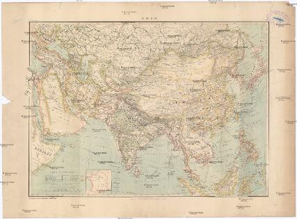
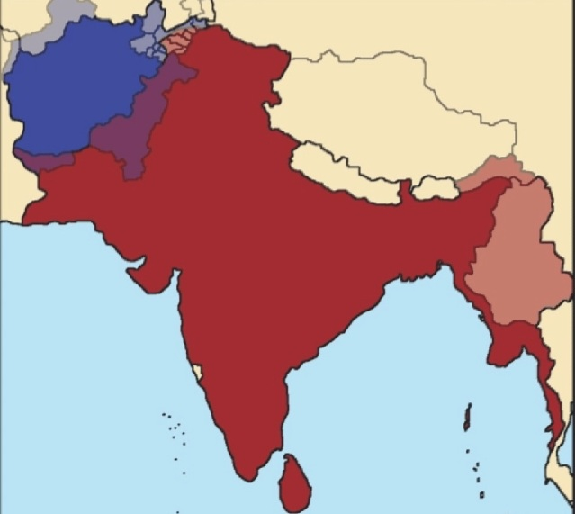
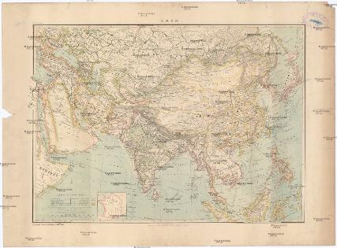
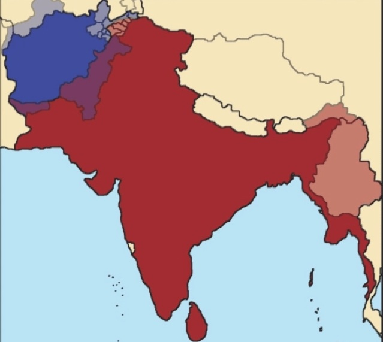

Hobbies
I love collecting old maps, especially of late 1500s to 1900s maps of United Mother India (माँ भारती)


 



I also love building legos and playing hearts of iron 4. My self goal is to try and find an algorithm which on every iteration can provide a single digit for pi to find its last digit.